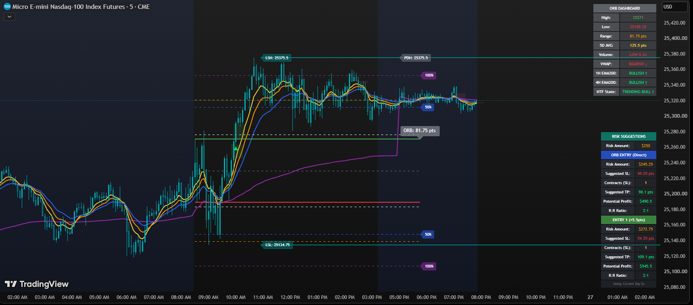

Free. No account, no email.
Arkham ORB is our free TradingView indicator for the Nasdaq opening range. It's the same opening-range framework the paid system is built on, in its simplest form. Add it to a chart and use it — there's nothing to sign up for.
Arkham ORB Indicator 3.8
Marks the opening range from the first 15 minutes of the New York session, then watches for breakouts through the high or low. Two things separate it from drawing the range by hand: it only flags a breakout when volume backs it, and it sizes the stop from recent volatility instead of a fixed number of points.

The dashboard reports the day's range, the 5-day average, relative volume and trend state. The risk panel below it is a calculator: it takes the account size and risk percentage you enter in the settings and works out the stop distance, contract count and target for each entry style. Those dollar figures are arithmetic from your own inputs — not a forecast, a recommendation, or a result. Chart shown for illustration.
Tracks the high and low of the first 15 minutes of the session (8:30–8:45 AM CT) and draws them. A move through either side during the rest of the open is what the indicator watches for.
A breakout is only flagged when volume clears a threshold — a rolling 12-period median with a 1.2× multiplier. The aim is to ignore the quiet drifts through a level that happen on thin participation.
Stop distance comes from a 10-day lookback of recent opening range sizes, at a 0.5× multiplier — so it tightens when ranges compress and widens when they expand. Minimum and maximum caps (35 and 75 points by default) keep it inside sane bounds. Both are adjustable.
Direct breakout entry, plus two pullback entries at configurable offsets. Each shows its own stop distance, contract count and target, so the position sizing matches where you actually got in.
Compares today's range against the 10-day average and flags it when the two diverge past a threshold (50% by default) — a signal that conditions are unusual and worth treating differently.
Range times, entry offsets, volume period and multiplier, lookback length, stop multiplier and caps, divergence threshold, account size, risk percentage and R:R. The indicator does the arithmetic — the inputs are yours.
- 1.Open the script on TradingView and add it to your favourites.
- 2.Apply it to a 5-minute MNQ or NQ chart.
- 3.Set your account size and risk percentage in the settings, so the contract maths matches your account.
- 4.Watch the range form between 8:30 and 8:45 AM CT, then watch the levels.
Arkham is educational, rules-based software. It is not financial advice, not a trade-signal service, and no outcome is guaranteed. Trading futures involves substantial risk of loss and is not suitable for every investor. You are responsible for every trade you place.
Two paid steps, and that's it
Arkham stays free forever. If it earns a place on your chart, there are exactly two things to buy — and they're for different people.
Nightwing
The member platform and the Nexus 2.0 extension. Journal your trades, import your broker fills, backtest, track prop accounts. Still your own entries — better tools around them. No indicator suite.
FSD-X Membership
Everything. ORB PRO (Knightfall MK2) and the full indicator suite, the Auto Trader, SCOUT alerts, the live room every market morning, the VIP Discord and the platform. Includes a 30-day free trial.